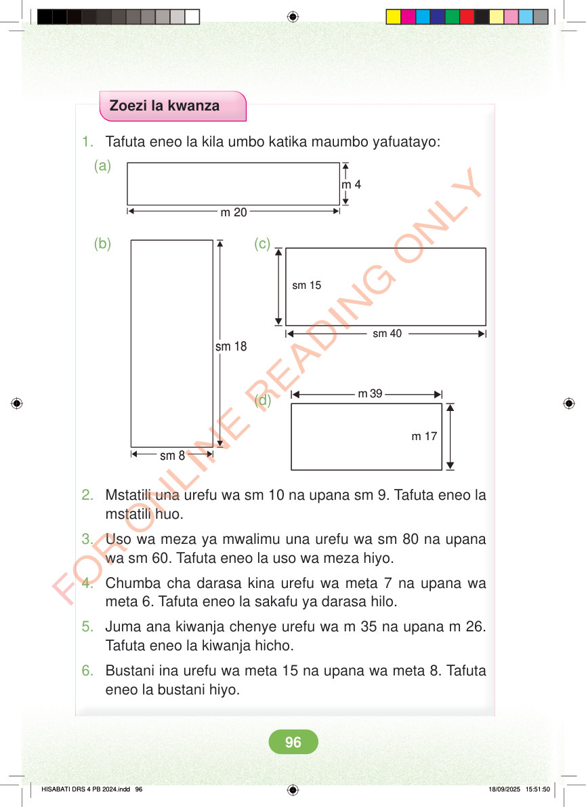

Zoezi la kwanza 1. Tafuta eneo la kila umbo katika maumbo yafuatayo: (a) m 4 m 20 (b) (c) sm 15 sm 40 sm 18 m 39 (d) m 17 sm 8 2. Mstatili una urefu wa sm 10 na upana sm 9. Tafuta eneo la mstatili huo. 3. Uso wa meza ya mwalimu una urefu wa sm 80 na upana wa sm 60. Tafuta eneo la uso wa meza hiyo. 4. Chumba cha darasa kina urefu wa meta 7 na upana wa meta 6. Tafuta eneo la sakafu ya darasa hilo. 5. Juma ana kiwanja chenye urefu wa m 35 na upana m 26. Tafuta eneo la kiwanja hicho. 6. Bustani ina urefu wa meta 15 na upana wa meta 8. Tafuta eneo la bustani hiyo. HISABATI DRS 4 PB 2024.indd 96 HISABATI DRS 4 PB 2024.indd 96 18/09/2025 15:51:50 18/09/2025 15:51:50